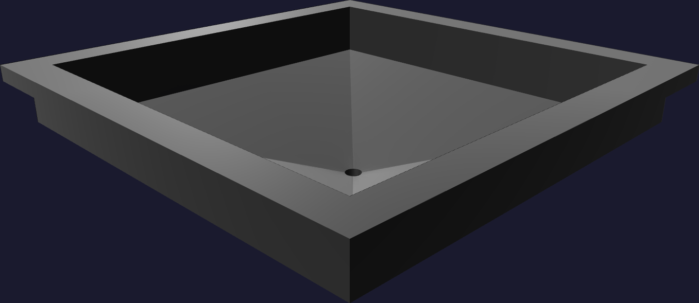

The part14
Peel it out, draw the rod
Two more movements, each on its own. The funnel comes out of the cavity first, with the rod still in it; the rod comes out of the funnel last.
- Start at the brim. Lift one edge of the flange and break the seal all the way round before you pull anything upward. A 40A rubber wants to peel; it does not want to be dragged.
- Support the brim and the spout together. The spout is the thin, deep part and it is still buried in the pocket — take its weight rather than letting the brim carry it.
- Lift the funnel clear with the rod still through it.
- Draw the rod out axially. Grip the exposed length — there is plenty of it — and pull straight. No twisting the funnel off it, and nothing that marks the rod's ground surface, because that surface is the next funnel's bore.
